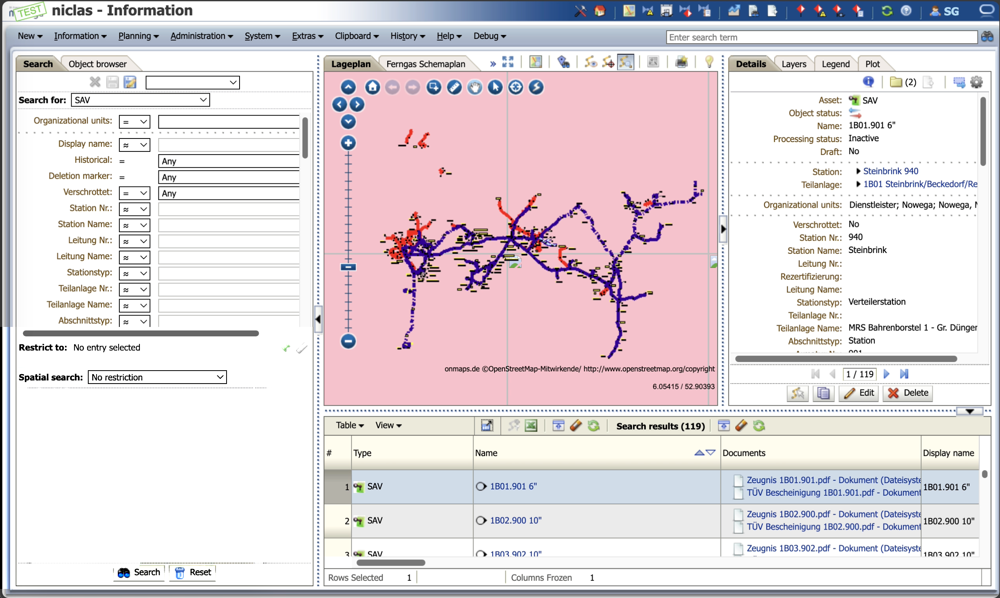
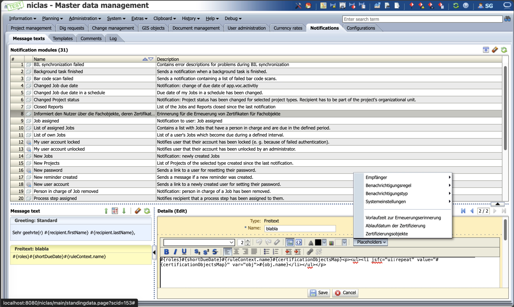
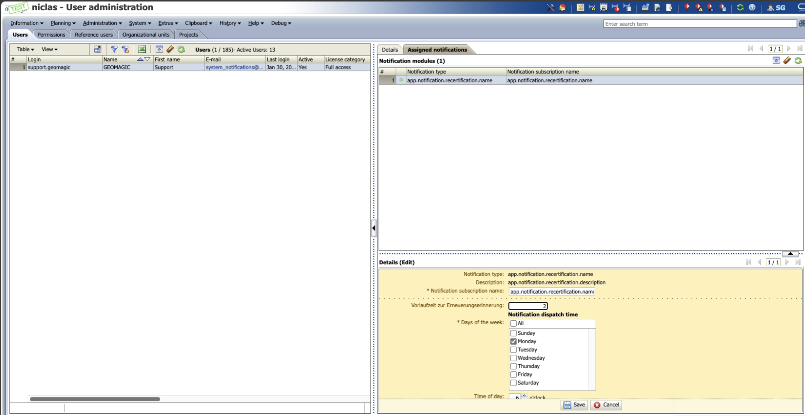
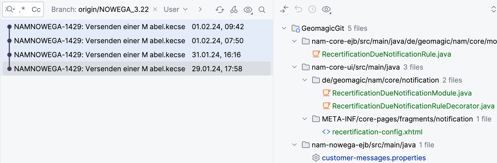

Implementierung eines automatisierten Benachrichtigungssystems für Zertifikatserneuerungen
Willkommen zu meinem Blogbeitrag, in dem ich ein aufregendes Feature vorstelle, das wir kürzlich in unserem System implementiert haben: Ein automatisiertes Benachrichtigungsmodul. Dieses Modul ist entscheidend für die rechtzeitige und effiziente Verwaltung von Zertifikatserneuerungen.
Anwendundgsfall
Sicherheitsabsperrventile spielen eine wichtige Rolle in der Gas-Fernleitungsinfrastruktur. Sie sind überall dort verteilt, wo es Gaspipelines gibt. Regelmäßige Wartung, Prüfung durch Gastdienstleister-Mitarbeiter und Zertifizierung durch Zertifizierungsstellen für solche Infrastruktur-Bauteile sind erforderlich. Das Modul zielt darauf ab, Benutzer automatisch ein Jahr vor Ablauf der Zertifizierung über die Notwendigkeit einer Erneuerung zu informieren. Dies erleichtert eine proaktive Verwaltung und Wartung von Sicherheitselementen und Assets.

Verteilung von Sicherheitsabsperrventile
Struktur und Abfragen der Datenbank für Funktionsorte (Funcloc)
Diese Sektion beschreibt die Tabellen und die SQL-Abfragen, die zur Ermittlung von Funktionsorten (Funcloc) auf Basis spezifischer Kriterien verwendet werden.
Beteiligte Tabellen und ihre Attribute
Nachfolgend sind die beteiligten Tabellen aufgeführt, die in den Abfragen verwendet werden:
gis_flc_e (Entitätstabelle)
id: Eindeutige Identifikationsnummer der Entität
type_cat_id: Fremdschlüssel zur Kategorietabelle (gis_flc_tc)
gis_flc_tc (Typ-Kategorietabelle)
id: Eindeutige Identifikationsnummer des Typs
name: Name der Kategorie (z.B. "Sicherheitsabsperrventil")
gis_flc_a (Attribut-Tabelle)
entity_id: Fremdschlüssel, der auf die Entitätstabelle (gis_flc_e) verweist
attrib_type_cat_id: Fremdschlüssel zur Attribut-Typ-Kategorietabelle (gis_flc_atc)
value: Wert des Attributs
gis_flc_atc (Attribut-Typ-Kategorietabelle)
id: Eindeutige Identifikationsnummer des Attributtyps
name: Name des Attributtyps (z.B. "Rezertifizierung")
type_cat_id: Fremdschlüssel zur Typ-Kategorietabelle (gis_flc_tc)
SQL-Abfragen zur Ermittlung von Funktionsorten
Nachfolgend sind die zunehmend komplexeren SQL-Abfragen dargestellt, die verschiedene Joins und Filterkriterien verwenden, um relevante Daten zu extrahieren:
-- Einfache Auswahl
SELECT tc.name FROM gis_flc_tc tc WHERE tc.name LIKE '%ventil%';
-- Erweiterte Joins
SELECT * FROM gis_flc_e e
JOIN gis_flc_tc tc ON e.type_cat_id = tc.id
WHERE tc.name LIKE '%ventil%' AND ROWNUM < 5;
Diese Abfrage verbindet Entitäten mit ihren Typen und filtert nach Typnamen.
-- Attribute einer spezifischen Entität
SELECT attrib.* FROM gis_flc_e e
JOIN gis_flc_a attrib ON attrib.entity_id = e.id
WHERE e.id = 3901808;
Hier werden alle Attribute einer spezifischen Entität angezeigt.
-- Verbindung von Attributen, Attribut-Typen und deren Kategorien
SELECT atc.ID, atc.name, atc.type, atc.type_cat_id, attrib.value, attrib.attrib_type_cat_id
FROM gis_flc_e e
JOIN gis_flc_a attrib ON attrib.entity_id = e.id
JOIN gis_flc_atc atc ON attrib.attrib_type_cat_id = atc.id
WHERE e.id = 3901808;
Diese Abfrage zeigt, wie Attribute über ihre Typen zu ihren Kategorien in Beziehung stehen und enthält auch die Werte der Attribute.
-- Optimale SQL-Abfrage (Hibernate)
SELECT f FROM Funcloc f
JOIN f.attributes attribs
WHERE f.typeCat.name = 'SAV'
AND attribs.attribTypeCat.name = 'Rezertifizierung'
AND trunc(:lastRenewalReminderLeadTimeEnd) < trunc(safe_to_date(attribs.value))
AND trunc(safe_to_date(attribs.value)) <= trunc(:renewalReminderLeadTimeEnd);
Diese Abfrage verknüpft die Funktionsorte (Funcloc) über ihre Attribute, wobei gefiltert wird nach Typ-Kategorienamen und Attribut-Typ-Kategorienamen. Sie nutzt zudem Datumsfunktionen, um zu ermitteln, welche Zertifizierungsdaten in einem spezifischen Zeitfenster ablaufen.
Zusammenfassung
Durch die Verwendung der beschriebenen Abfragen können relevante Funktionsorte/Fachobjekte/Funclocs basierend auf bestimmten Typ-Kategorien und Attributen effizient identifiziert und verwaltet werden. Die SQL-Abfragen nutzen Datumsfunktionen, um zu ermitteln, welche Zertifizierungsdaten in einem spezifischen Zeitfenster ablaufen, was für die Rezertifizierungsprozesse von entscheidender Bedeutung ist.
Beschreibung des Features
Das Hauptziel unseres Benachrichtigungsmoduls ist es, unsere Nutzer über anstehende Zertifikatserneuerungen für kritische Komponenten wie Sicherheitsabsperrventile und Kugelhähne zu informieren. Dies erfolgt durch automatisierte E-Mail-Benachrichtigungen, die den Nutzern helfen, immer auf dem neuesten Stand zu bleiben.

E-Mail Konfigurationsoberfläche
Das E-Mail-Benachrichtigungsmodul unseres Systems ermöglicht eine flexible Gestaltung von Benachrichtigungen durch einen spezialisierten Editor. Dieser Editor erlaubt das Einsetzen von vordefinierten Platzhaltern in E-Mail-Vorlagen. Bei der Versendung werden diese Platzhalter automatisch mit den zugehörigen Daten gefüllt.
Organisation der Platzhalter
Die Platzhalter sind nach Themen gruppiert, wie Empfänger, Benachrichtigungstyp, Benachrichtigungsregel, Systemeinstellungen für die Vorlaufzeit zur Erneuerungserinnerung, das Ablaufdatum der Zertifizierung und Zertifizierungsobjekte. Wir werden später erläutern, wie diese letzten drei programmatisch bereitgestellt werden, um ihre Auswahl in der E-Mail-Vorlage zu ermöglichen.
Die Konfiguration umfasst verschiedene Eingabefelder, die das JSF Expression Language Format unterstützen. Dieses Format erlaubt es, dynamische Ausdrücke direkt im XHTML-Code zu nutzen, was eine effiziente Datenverarbeitung und -darstellung ermöglicht.
Hier ist ein Beispiel, wie dynamische Listen von Zertifizierungsobjekten im XHTML dargestellt werden können:
Dieser Codeabschnitt demonstriert, wie man eine ungeordnete Liste von Objekten erstellt, wobei jedes Element der Liste einem Zertifizierungsobjekt entspricht.
Einrichtung des Benachrichtigungsmoduls
Administratoren können ein Benachrichtigungsmodul erstellen, das es den Nutzern ermöglicht, sich für regelmäßige Updates zu einem bestimmten Thema zu registrieren. Die Konfiguration umfasst spezifische Eingabefelder, die festlegen, welche Methode ausgeführt wird, das gewählte Zeitintervall und die zu übergebenden Argumente.

Verwaltungsoberfläche für Benachrichtigungen
Das neue Benachrichtigungen Modul kann beim Erstellen konfiguriert werden. Ein Wochentag kann bestimmt werden, an den es ausgelöst werden soll.
Die Nutzer benötigten ein System, das sie rechtzeitig informiert, welche Objekte innerhalb zB. des nächsten 365 Tage eine Erneuerung ihrer Zertifikate benötigen.
Die Oberfläche für die Benachrichtigungskonfiguration ermöglicht es dem Administrator, das Benachrichtigungsmodul flexibel anzulegen. Die Konfiguration erfolgt über XHTML und ist wie folgt definiert:
Dieser Codeabschnitt demonstriert, wie Label in JSF konfiguriert werden. Es zeigt auch, wie man eine `af:panelLabelAndMessage` verwendet, um Label und Wert/Input in einer Zeile zu organisieren. Die Facetten, hier verwendet mit ``, erlauben es, spezifische Teile an bestimmten Stellen zu positionieren, was für ein übersichtliches Layout sorgt.
Zuerst haben wir ein AFPanelFormLayout verwendet und das hat dafür gesorgt, dass der Label in eine neue Zeile gerutscht ist, statt in derselben Zeile wie der Wert/Input zu bleiben.
Um diese Anordnung zu korrigieren, haben wir das AFPanelLabelAndMessage-Element eingeführt, das sowohl das Label als auch den zugehörigen Wert (Message) umfasst. Dieses Element erlaubt es uns, die Anzeige so zu steuern, dass Label und Wert in derselben Zeile erscheinen. Es ist auch wichtig, das Attribut simple="true" beim Input-Text zu verwenden, um unerwünschte Label-Darstellungen zu vermeiden und nur den Wert anzuzeigen. Diese Anpassung verhindert unnötige Einrückungen und sorgt für ein sauberes Layout.
Zusätzlich wurde die Notwendigkeit einer angepassten Breite für den Input-Text mittels der Style-Klasse size80 betont, die eine angemessene Breitenanpassung ermöglicht und so das Gesamtbild verbessert. Es wird auch gezeigt, wie Facetten genutzt werden können, um spezifische Layout-Anforderungen innerhalb von JSF-Komponenten zu erfüllen. Insbesondere die end Facette im AFPanelLabelAndMessage, die dazu dient, den Output-Text mit einem kleinen Abstand richtig zu positionieren, um eine klare Trennung der Elemente zu gewährleisten.
Benachrichtigungskonfiguration
Nutzer können die Benachrichtigungsthemen abonnieren und erhalten E-Mails, die nach einem festgelegten Zeitplan gesendet werden. Die Benachrichtigungen werden so konfiguriert, dass sie nur die relevanten Objekte betreffen, die innerhalb des nächsten Jahres eine Erneuerung benötigen.
public class HelloWorld {
public static void main(String[] args) {
System.out.println("Hello, world!");
}
}
Codebeispiel und Erklärung zum Recertification Due Notification Module
Das Modul nutzt das Interface RecertificationDueNotificationRule, um die Regeln für die Benachrichtigungszeitpunkte zu definieren. Die Klasse RecertificationDueNotificationRuleDecorator implementiert dieses Interface und stellt Methoden bereit, um die Einstellungen für die Vorlaufzeit der Erneuerungserinnerungen zu lesen und zu schreiben.
@Name(RecertificationDueNotificationModule.COMPONENT_NAME)
@Scope(ScopeType.APPLICATION)
@AutoCreate
@Startup(depends = {"org.jboss.seam.navigation.pages", StandingDataPersister.COMPONENT_NAME})
public class RecertificationDueNotificationModule
extends TimeBasedNotificationModule<RecertificationDueNotificationRule> {
private static final long serialVersionUID = -2321605615754993069L;
public static final String COMPONENT_NAME = "RecertificationNotificationModule";
@In
private ActivityDao activityDao;
@In
private TaskDao taskDao;
@Override
protected void processTimeBasedNotification(RuleContext<RecertificationDueNotificationRule> rule) {
Long renewalReminderLeadTime = rule.getConfig().getRenewalReminderLeadTime();
Date from = rule.getLastInvocation();
Date to = rule.getNow();
User user = rule.getUser();
Date renewalReminderLeadTimeEnd = DateUtils.addDays(to, renewalReminderLeadTime.intValue());
Date lastRenewalReminderLeadTimeEnd = DateUtils.addDays(from, renewalReminderLeadTime.intValue());
List<Funcloc> funclocList = getFunclocList(
lastRenewalReminderLeadTimeEnd, renewalReminderLeadTimeEnd);
if (!funclocList.isEmpty()) {
sendNotification(rule, funclocList, renewalReminderLeadTime);
}
}
public List<Funcloc> getFunclocList(Date lastRenewelReminderLeadTimeEnd, Date renewelReminderLeadTimeEnd) {
String hqlQuery = "select f from Funcloc f join f.attributes attribs where f.typeCat.name = 'SAV' and attribs.attribTypeCat.name = 'Rezertifizierung' and trunc(:lastRenewalReminderLeadTimeEnd) < trunc(safe_to_date(attribs.value)) and trunc(safe_to_date(attribs.value)) <= trunc(:renewalReminderLeadTimeEnd)";
Query query = Lookup.entityManager().createQuery(hqlQuery);
query.setParameter("lastRenewalReminderLeadTimeEnd", lastRenewelReminderLeadTimeEnd);
query.setParameter("renewalReminderLeadTimeEnd", renewelReminderLeadTimeEnd);
List<Funcloc> funclocList = query.getResultList();
return funclocList;
}
}
Verarbeitung zeitbasierter Benachrichtigungen im RecertificationDueNotificationModule
In der Methode processTimeBasedNotification des RecertificationDueNotificationModule wird der typisierte RuleContext<RecertificationDueNotificationRule> verwendet, um zeitbasierte Benachrichtigungen für die Rezertifizierung zu verarbeiten. Nachfolgend wird der Ablauf innerhalb dieser Methode detailliert beschrieben:
Extraktion der Lead Time
Die Methode extrahiert zunächst die Erinnerungsfrist vor der Erneuerung (renewalReminderLeadTime) aus der Konfiguration der Regel (rule.getConfig()). Dieser Wert gibt an, wie viele Tage im Voraus Benutzer über die bevorstehende Rezertifizierung informiert werden sollen.
Berechnung des Zeitfensters
Basierend auf dem extrahierten Wert berechnet die Methode zwei wichtige Zeitpunkte:
renewalReminderLeadTimeEnd: Dieses Datum markiert das Ende des Zeitfensters für die kommende Benachrichtigung und wird berechnet, indem die renewalReminderLeadTime zum aktuellen Datum (rule.getNow()) addiert wird.
lastRenewalReminderLeadTimeEnd: Dies ist das Ende des Zeitfensters für die letzte Benachrichtigung, berechnet durch die Addition der renewalReminderLeadTime zum Datum der letzten Ausführung (rule.getLastInvocation()).
Durchführung der SQL-Abfrage
Mit diesen beiden berechneten Daten ruft die Methode getFunclocList auf, um die entsprechenden Funktionseinheiten (oder Funcloc) zu ermitteln, die innerhalb dieses spezifizierten Zeitfensters liegen. Die SQL-Abfrage innerhalb dieser Methode filtert Einträge basierend auf diesen Zeitfenstern und ermittelt relevante Objekte, die für die Benachrichtigung benötigt werden.
Versand der Benachrichtigung
Wenn die Abfrage Ergebnisse zurückgibt (d.h., es gibt Funcloc-Objekte, die in das Kriterium passen), wird die Methode sendNotification aufgerufen. Diese Methode bereitet die eigentliche Benachrichtigung vor und sendet sie an den Benutzer. Die Benachrichtigung enthält Details wie das Ablaufdatum der Zertifizierung und andere relevante Informationen, die aus den Attributen der Funcloc-Objekte extrahiert werden.
Speicherung der Ausführungszeit
Zum Abschluss speichert die Methode das aktuelle Datum (rule.getNow()) als die Zeit der letzten Ausführung, um bei der nächsten Ausführung als Referenzpunkt zu dienen. Dies hilft, eine kontinuierliche und zeitgerechte Auslösung von Benachrichtigungen zu gewährleisten.
Durch diese Schritte stellt das RecertificationDueNotificationModule sicher, dass Benutzer rechtzeitig über ihre anstehenden Rezertifizierungen informiert werden, basierend auf den durch das System definierten Regeln und Zeitplänen.
Implementierung und Anpassung für bestimmte Kunden
Die Entwicklung eines neuen Benachrichtigungsmoduls, das auf der Funktionalität des bestehenden Core-Moduls basiert ist einfach zu implementieren.
Das Benachrichtigungsmodul wird speziell für einen Kunden in einer Kundenbranche erstellt. Dabei nutzt man die Kernfunktionen des Core-Moduls als Grundlage, um ein angepasstes Benachrichtigungsmodul zu entwickeln, das den spezifischen Anforderungen dieses Kunden entspricht.
Technische Details und Implementierung
Wir müssen die Objekte abfragen, deren Ablaufdatum, deren Zertifikats Ablaufdatum vor einem bestimmten Stichtag liegt, nämlich vor dem Ausführung-Zeitpunkt plus ein Jahr.
Und dann am nächste Woche müssen wir es wieder tun, ohne die Nutzern noch mal über die Objekte zu informieren, über die sie bereits informiert wurden bei der letzten Ausführung der Benachrichtigung.
Ein Worker-Thread, zusammen mit dem Scheduler und dem RuleContext, speichert bei jeder Ausführung, abgesehen von der allerersten, seine Ausführungszeit. Dies ermöglicht es, dass bei jeder folgenden Ausführung des Benachrichtigungsmoduls auf die letzte Ausführungszeit zugegriffen werden kann. Dadurch lässt sich das Zeitfenster entsprechend anpassen: Die linke Kante des Zeitfensters wird als 'letzte Ausführungszeit plus ein Jahr Vorlaufzeit' definiert. Diese Anpassung stellt sicher, dass Objekte, die bereits in der letzten E-Mail erwähnt wurden, nicht erneut in der aktuellen Benachrichtigung erscheinen.
Entwickler, die tiefer in die Funktionalitäten von Quartz eintauchen möchten, sollten sich mit Schlüsselkonzepten wie dem Job-Interface, JobDetail, SchedulerFactory, JobBuilder, und TriggerBuilder vertraut machen.
Die technische Implementierung umfasste die Entwicklung von XHTML-Seiten und Java-Klassen, die die Konfigurationsdaten verarbeiten. Jedes Benachrichtigungsmodul verfügt über ein Interface mit Getter- und Setter-Methoden, die die XHTML-Elemente referenzieren.

In diesem Blogbeitrag habe ich die Entwicklung unseres kritischen Benachrichtigungsfeatures detailliert beschrieben. Ziel ist es zu zeigen, wie meine solide Ingenieurskunst und vorausschauende Planung zu effektiven und skalierbaren Lösungen führen können.